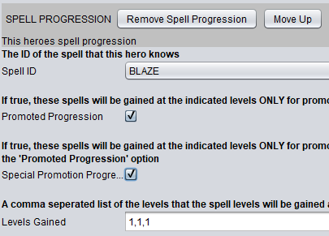

Overview
Defining Heroes is done on the Heroes tab of the planner. A Hero represents an entity that will be able to join the players 'group' and in doing so they will be eligible to participate in battles and progress in power through leveling up and through receiving new items. In general each Hero should be unique to the group, that is, there should not be multiple instances of the Hero in the group at a given time. As Heroes progress they may gain the option of being promoted which allows for a completely different set of attributes to be used for the hero. Each hero must contain at minimum one HeroProgression that defines their starting statistics when they join the force. At maximum a hero should have three HeroProgessions defined, one unpromoted, one promoted and one special promotion.

Leaders
Hero's that are marked with the 'Is Leader' option represent a combatant that is so important that if they are killed in any battle then the battle is considered lost. Because of this, very few heroes should be marked as leader. However at least one hero must be defined and in the players 'group' at any given time, generally the first hero in the players 'group'. The hero that is marked as a leader that has been in the 'group' the longest time will act as the players controllable character for in-town movement and interaction. For situations where a hero may be considered a leader in a subset of the battles, you should use the On Hero Death condition for those battles.
For more information about the in-town game state see: Game States
For more information about using triggers see: Using Triggers and Conditions
Movement Type
Each hero will have a movement type that dictates how terrain effects it's movement in battle. Available values for this property are set in the implementation of the EngineConfigurationValues that you have defined via the getMovementTypes attribute. Each moveable space in battle should be defined with one of the terrain types in your implementation of EngineConfigurationValues via the getTerrainTypes attribute.
For more information about defining terrain and movement types see: Configuring the Engine
For more information about the effects of terrain and movement types see: Default Battle System
Equippable Items
Each hero can define a subset of equippable items that they can equip. A hero will only be allowed to equip an item if the items Item Style matches on the of the values selected in the 'Usable Items' attribute of the hero. The list of item styles is defined by your implementation of EngineConfigurationValues as defined by getWeaponTypes. By default all heroes are allowed to wear rings.
For more information about defining weapon types see: Configuring the Engine
Statistic Growth
A hero starts the game with the statistics indicated in their starting progression.
Most statistics can naturally increase over the course of the game when a hero levels up:
The first set of these are HP, MP, Attack, Defense and Agility statistics. For these five statistics the hero will start with the value indicated by their starting progressions HP Start, MP Start, Attack Start, Defense Start and Agility Start values respectively. As the hero gains levels their statistics should approach the values indicated by the HP End, MP End, Attack End, Defense End and Agility End attributes. The speed in which these statistics grow is determine by each of the respective ATTRIBUTE Gain category. The values available in this list are defined in your implementation of LevelProgressionConfiguration via the getStandardStatProgressionTypeList attribute. Each time a hero gains a level, the defined LevelProgressionConfiguration will have its' getProgressArray method called which will indicate the percent of the way towards the final statistic value (ATTRIBUTE End) the given attribute should be at with that attributes Gain rate and their current level.
The next set of values that may grow as you gain levels are Body and Mind, their initial values are indicated by a selection of 'WEAK', 'MEDIUM' or 'STRONG'. These values map to percentages as defined by your implementation of LevelProgressionConfiguration via the getBaseBodyMindStat method. These values grow at a rate as defined by their respective Progression Type. The available Progression Types are defined by your implementation of LevelProgressionConfiguration via the getBodyMindProgressionTypeList method. Each time a hero gains a level, the defined LevelProgressionConfiguration will have its' getLevelUpBodyMindStat method called which will indicate the value that the Body or Mind statistic should be set to given the hero's current level and Progression Type
Finally, although the Special Attack statistics do not specify a growth rate they can also grow as the hero levels, their initial values are indicated by a selection of 'WEAK', 'MEDIUM' or 'STRONG'. These values map to percentages as defined by your implementation of LevelProgressionConfiguration via the getBaseBattleStat method. The growth of these values is defined by LevelProgressionConfiguration via the getLevelUpBattleStat method which is called each time a hero gains a level.
For more information about defining statistic growth see: Configuring the Engine
Special Attack Chances
Each time a hero uses a basic attack or is attacked with a basic attack there is a chance that they will perform a special beneficial action.
- Counter: The target of attack will perform a single attack action against their attacker provided that they are in range. This attack deals damage equal to the damage they would have normally done times the value defined in the
BattleFunctionConfigurationby thegetCounterDamageModifier. - Evade: The target of the basic attack will take no damage or effects from the a single attack. The defendants "Dodge" animation will be shown.
- Double: The attacker will perform two full damage attacks back-to-back against it's target.
- Critical: The attacker will deal increased damage with their basic attack, the amount dealt is equal to the damage they would have normally done times the value defined in the
BattleFunctionConfigurationby thegetCritDamageModifier.
The value specified in this field should be a number 0-100 that indicates the percent chance that the hero will perform the given special action. For instance a value of "20" in the 'Double Chance Strength' field means that each time the hero performs a basic attack they will have a 20% to perform a double attack.
Each of these percent values may be further modified in the BattleFunctionConfiguration via the getDoublePercent, getCounterPercent, getDodgePercent, getCritPercent attributes which allows for adding custom values that can be used to increase/decrease battle difficulty.
For more information about defining special attack chances and outcomes see: Configuring the Engine
Spell Progression
Hero's can be defined to begin the game with spells also to learn new spells and spell levels as they progress. A defined SpellProgression is directly tied to a HeroProgression by the combination of values indicated by Promoted Progression and Special Promoted Progression. A hero that is currently unpromoted will be progressing via the HeroProgression that has the Promoted Progression box unchecked, similarly their spells will be progressing at a rate as defined by SpellProgressions that have the Promoted Progression box unchecked. Once the hero becomes promoted then they will be progressing via the HeroProgression that has the Promoted Progression box checked, similarly their spells will be progressing at a rate as defined by SpellProgressions that have the Promoted Progression box checked.
For example:
Consider the hero with four spell progressions defined

If the hero was unpromoted and level 1 they would know Lightning level 1 and Flood level 2. They would eventually be able to attain Lightning 2-4 and Flood level 3 at higher levels.
If the hero was promoted and level 1, but not special promoted they would know Bolt level 2. They would eventually be able to attain Bolt 3-4 at higher levels.
If the hero was special promoted and level 1 they would know Blaze level 3. They would gain no more spells as they continued to level.


Spells may be defined with up to four levels, so SpellProgressions may also indicate four numbers in the Levels Gained attribute with each number indicating which level the hero will gain the next level of the spell.
For example:
The Levels Gained text field contains four numbers which means this hero can learn Lightning levels 1-4. Because the Promoted Progression box is checked and the first number indicated is '1', Lightning level 1 will be learned as soon as the hero is promoted or if the hero is defined as promoted to start. Because the next number is '7', the hero will learn Lightning level 2 once they reach promoted level 7. Lightning level 3 will be learned at level 12 and Lightning level 4 will be learned at level 18. If the first two numbers were "1" (So 1,1,12,18), then the hero would learn Lightning level 1 and 2 when they are promoted.

For more information about defining spells see: Configuring the Engine
Starting Items
Heroes can join the 'group' with equipment and other items. The list of items available to give to a hero is the same as the list of items defined in the planner. Keep in mind when adding equipped items to a hero that it could modify the final statistics of the hero when it is in battle.
To give an hero a starting item, right click on their name in the planner and select "Starting Item".
Promotion
Depending on how you have configured your engine, heroes can become eligible for promotion by reaching the level specified in your implementation of EngineConfigurationValues via the getHeroPromotionLevel attribute. Promotion represents an opportunity to change all aspects of a hero's progression including statistic progression, access to spells, movement type and usable item types. On attaining promotion level an unpromoted hero can be promoted by speaking with a priest and selecting the Promote option. Hero's must have a promotion progression defined in order to be promoted, otherwise errors will occur. A hero can be defined as promoted to begin with by checking the 'Promoted' box, in this case the hero will use the 'HeroProgession' that has the 'Promoted Progression' box checked. Hero's that join the group already promoted cannot ever use a Special Promotion.
Upon promotion changes occur in the following areas.
Basic Statistics (By default: HP, MP, Attack, Defense, Agility)
None of the hero's basic statistics will be immediately changed, that means that a hero may have a statistic lower then the indicated 'Start' value, but on subsequent level ups, statistic progression will be done using the promoted progressions 'Start' and 'End' values which will likely result in a different growth then the unpromoted progression.
Level
The hero's level will be changed to a value of "1". All level specific attributes (spell progression) should use this new lower number to define progression timing.
Movement Value and Movement Type
The hero's base movement statistic and their movement type will immediately be changed to the value specified in the promoted progression.
Resistances
The hero's base elemental resistances will immediately be changed to the the value specified in the promoted progression.
Special Attack Chance (By default: Double, Counter, Dodge, Critical)
The hero's special attack chances will immediately be changed to the value specified in the promoted progression.
Spells
All of the hero's spells learned before promotion will be immediately forgotten. Any SpellProgressions that are defined for the hero that are marked as promoted will be checked to see if the hero meets the level requirements for the indicated spell and if so, they will learn that spell immediately. For any spell that the hero previously knew that they should retain after promotion a SpellProgression should be defined with the Promoted Progression box checked and the Levels Gained set as "1" so that they immediately gain the spell.
For example:
Joe is unpromoted and level 14 with the following SpellProgression's defined:
Because of this he knows Flood level 2.
After he becomes promoted he becomes level 1 and has only the following SpellProgression defined that is marked as Promoted Progression
Because he has forgotten his original spells this means that he only has access to Burst level 1
If we wanted him to continue having access to Flood level 2 then we would need to add an additional SpellProgression marked Promoted Progression that defines the levels that he learns Flood level 2.


Usable Items and Inventory
A promoted hero will immediately lose proficiency with the items specified in their unpromoted progression and will become proficient in the items specified as Usable Items in the promoted progression. The items in the hero's inventory will remain unchanged, but depending upon their newly defined Usable Items they may no longer have a given item equipped if they are no longer able to use it.
For more information about in game statistics see: Default Battle System
For more information about defining promotion level see: Configuring the Engine
Special Promotion
Special promotion is very similar to promotion as defined above except that a HeroProgression that is marked as 'Special Promoted Progression' can only be attained when the hero to be promoted is holding the indicated 'Special Promotion Required Item' in their inventory. The list of items to allow special promotion is the same as the list of items defined in the planner. When this occurs the Priest will prompt the user to see if they want to use the indicated item to promote the hero to this special promotion. If yes is selected then the item will be removed from the hero's inventory and the hero's progression will now follow the special progression. This is identical as far as changes are concerned to a normal promotion except that the hero's spell progression will now be drawn from SpellProgression's that have the Special Promotion Progression box selected.
For more information about creating items see: Defining Items
Planner Attributes
Default Values
- Name: The name of the hero
- Promoted: If true, this hero is promoted when they initially join the party
- Level: Starting Level for the hero
- Animation File: The name of the animation file that should be used for this hero
- Is Leader: Whether this hero is the leader of the force
Hero Progression: This heroes statistic progression
- Promoted Progression: Whether this progression represents this heroes promoted or unpromoted progression
- Special Promotion Progression: If checked, this progression will be used for the SPECIAL promotion path (as opposed to default). Selecting this supercedes the 'promoted' checkbox
- Special Promotion Required Item: If special promotion is checked, this is the item that must be possesed by the group to allow the this special promotion to occur. If this item is not owned then this progression path will be unavailable. If special promotion is checked and this value is not specified then this promotion path will be impossible to take.
- Starting Move: The heroes base move while in this progression
- Movement Type: The movement type of this hero
- Attack Gain: The amount of attack the hero should gain per level
- Attack Start: The amount of attack the hero should start with
- Attack End: The minimum amount of attack the hero should end with
- Defense Gain: The amount of defense the hero should gain per level
- Defense Start: The amount of defense the hero should start with
- Defense End: The minimum amount of defense the hero should end with
- Speed Gain: The amount of speed the hero should gain per level
- Speed Start: The amount of speed the hero should start with
- Speed End: The minimum amount of speed the hero should end with
- HP Gain: The amount of HP the hero should gain per level
- HP Start: The amount of HP the hero should start with
- HP End: The minimum amount of HP the hero should end with
- MP Gain: The amount of MP the hero should gain per level
- MP Start: The amount of MP the hero should start with
- MP End: The minimum amount of MP the hero should end with
- Fire Affinitiy: The heroes base fire affinity. Items can modify this value.
- Electricity Affinitiy: The heroes base electricity affinity. Items can modify this value.
- Cold Affinitiy: The heroes base cold affinity. Items can modify this value.
- Dark Affinitiy: The heroes base dark affinity. Items can modify this value.
- Water Affinitiy: The heroes base water affinity. Items can modify this value.
- Earth Affinitiy: The heroes base earth affinity. Items can modify this value.
- Wind Affinitiy: The heroes base wind affinity. Items can modify this value.
- Light Affinitiy: The heroes base light affinity. Items can modify this value.
- Body Strength: Determines the base body value for the hero.
- Body Progression Type: The name of the progression type that dicates how this heroes body stat will increase.
- Mind Strength: Determines the base mind value for the hero.
- Mind Progression Type: The name of the progression type that dicates how this heroes mind stat will increase.
- Counter Chance Strength: Determines the base counter chance value for the hero.
- Evade Chance Strength: Determines the base evade chance value for the hero.
- Double Chance Strength: Determines the base double attack chance value for the hero.
- Critical Strength: Determines the base critical attack chance value for the hero.
- Usuable Items: The type of weapons that this hero can use
- Class Name: The name of this characters class.
Spell Progression: This heroes spell progression
- Spell ID: The ID of the spell that this hero knows
- Promoted Progression: If true, these spells will be gained at the indicated levels ONLY for promoted heroes using the DEFAULT progression path.
- Special Promotion Progression: If true, these spells will be gained at the indicated levels ONLY for promoted heroes using the SPECIAL progression path. Selecting this supercedes the 'Promoted Progression' option
- Levels Gained: A comma seperated list of the levels that the spell levels will be gained at.
Starting Item: An item that this hero should start with
- Item ID: The ID of the item that this hero should start with
- Item Equipped: If true, the item will start as equipped.